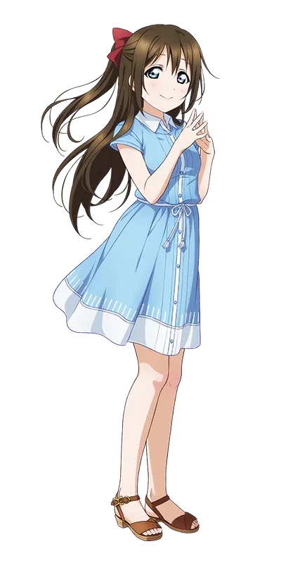
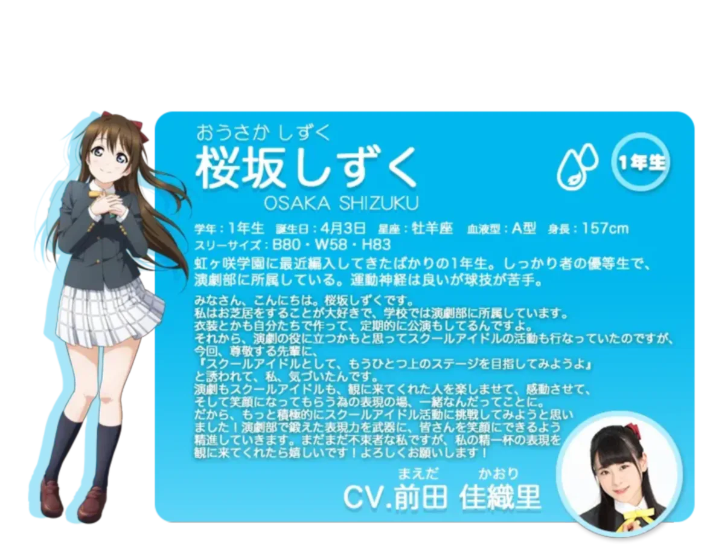
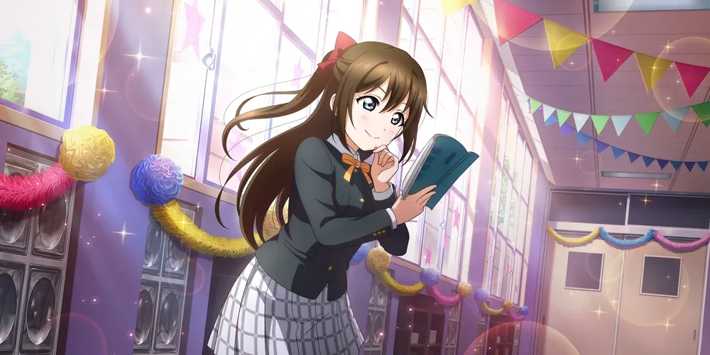
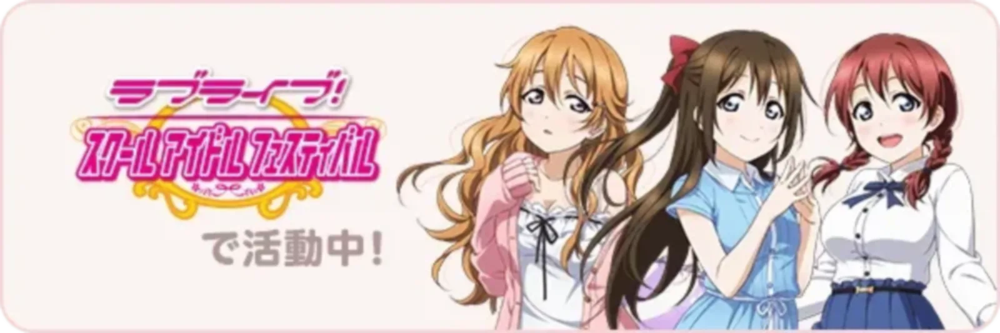
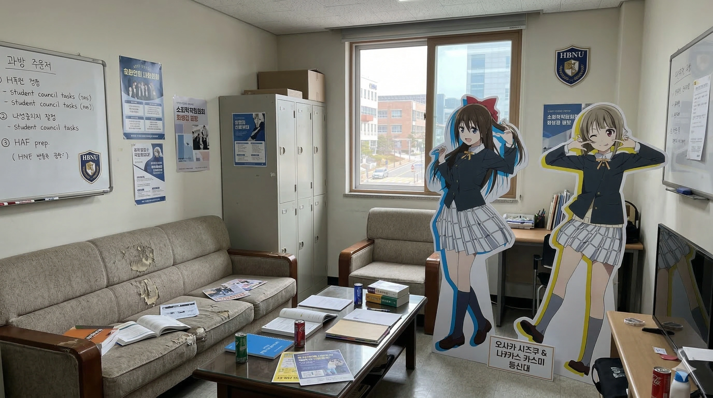
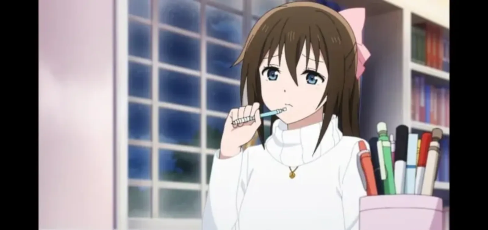
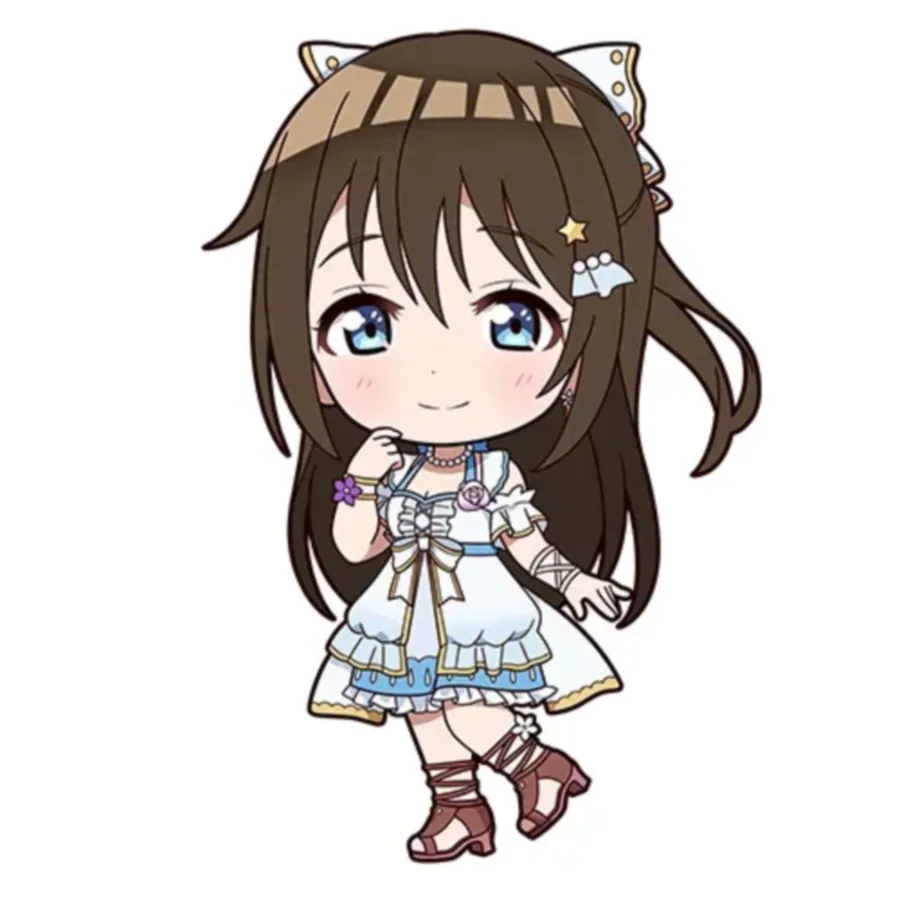

- 1. 개요
- 2. 특징
- 2.1. 자기소개
- 2.2. 유튜브 메시지
- 2.3. 외형 및 보컬 스타일
- 3. 행적
- 3.1. 스쿠페스 선전 & 애니메이션
- 4. 효빈광역시와의 관계 (앵판초·시즈쿠 버스 유니버스)
- 5. 투표 결과 및 랭킹
- 5.1. 월간 앙케이트
- 5.2. 월간 랭킹 및 코멘트
- 6. 솔로/센터곡 일람
- 7. 2차 창작 및 동인 이미지
- 8. 커플링
- 8.1. 유우뽀무 (x 타카사키 유우)
- 8.2. 그 외 커플링
- 9. 기타 및 여담
1. 개요

인생, 내리막길 오르막길... 그래도 역시~?
(오사카!)
연극도 스쿨 아이돌도 힘낼게요
연기파계 스쿨 아이돌
니지가사키 학원에 최근 편입해 스쿨 아이돌 동호회와 연극부를 겸임하고 있는 1학년. 소속학과는 국제교류학과. 세계에서 활동하는 배우가 되기 위해 여러 언어를 배우려는 목적으로 선택했다고 스쿠스타 10장 7화에서 밝혔다.
착실한 우등생이지만 이과 과목에는 약하며 연극과 애견의 이야기가 되면 눈치가 없어지기도 한다. 운동신경은 좋지만 구기종목은 잘 못 한다. 배우를 꿈꾸고 스쿨 아이돌 활동으로 얻은 경험을 연기에서 살리고 싶어한다.
이름인 시즈쿠는 일본어로 물방울이라는 뜻으로, 이름에 걸맞게 사인에 물방울이 들어가 있으며 퍼스널 아이콘도 물방울이다. 퍼스널 아이콘을 자세히 보면 물방울 안에 벚꽃잎 무늬가 있는데 성씨(桜)와 이름(물방울)의 모티브를 융합시킨 그림이라는 것을 알 수 있다.
2. 특징
이곳에서 찾아내고 싶어요.
나다움이란 건 뭘까요?
연기하는 것만으로 괜찮은 걸까요?
착하고 성실한 소녀. 어릴 때 엄마와 함께 보았던 연극을 계기로 연극부에도 들어가게 되었고 연극 관람이 취미라 평소에는 연극 혹은 영화 DVD를 보고 있다고 한다. 연극부답게 연극을 가장 좋아하지만 바느질도 좋아한다. 코노에 카나타의 말에 따르면 '상당히 성실하고, 언제나 어깨에 힘이 들어가 있는 느낌'.
1학년인데도 소노다 우미, 쿠로사와 다이아와 마찬가지로 군기반장 캐릭터성이 있다. 앞의 둘이 츤데레에 열혈 군기반장이라면 시즈쿠는 조용히 아우라로 분위기를 잡는 스타일로, 인터뷰를 진행하는데 옆 부실이 시끄럽자 선배들이 잔뜩 있는 타 동아리로 달려가 순식간에 조용히 시키는 포스를 발휘한 전적도 있다.
1인칭은 와타시(私). 팬들에게 종종 존댓말 캐릭터로 오해받기도 하지만, 누구에게나 가리지 않고 존댓말을 하는 우미나 다이아, 세츠나, 시오리코, 쿠쿠, 렌, 나츠미, 토마리와 달리 시즈쿠는 존댓말 캐릭터가 아니다. 동갑끼리 대화할 때는 평범하게 반말로 대화하지만 1학년에게도 이름에 상을 붙여 부르는 데다 스쿠스타에서는 초기에 뮤즈 1학년, 아쿠아 1학년, 시오리코에게 모두 존댓말을 사용하였기 때문에 생긴 오해다. 어쨌든 텐노지 리나와 나카스 카스미는 물론, 시간이 흐르면서 미후네 시오리코, 다른 그룹 1학년 멤버들에게 말을 놓기 시작했고 이벤트 스토리에서는 어린 여자아이들에게도 반말을 사용하기 때문에 완전히 존댓말 캐릭터라고는 할 수 없다.
집이 카마쿠라에 있고 매일 통학한다. 카마쿠라에서 오다이바까지 전철만 편도 1시간 거리. 본인은 아침에 팔팔해서 괜찮다고 한다. 스쿠페스 스토리에선 스쿠페스 분실 멤버들을 집에 데려온 적도 있다. 참고로 집은 상당한 규모로 추정되며, 대대로 내려오는 히나 인형이 존재한다. 애니메이션 2기에서 등장한 시즈쿠의 집은 실존하는 구화정궁저(旧華頂宮邸)가 모티브다.
강아지를 좋아하고 집에서 골든 리트리버를 키우고 있는데 이름은 '오필리아'다. 햄릿에 나오는 여주인공의 이름에서 따왔다. 점심시간 드라마 시디에서 밝혀진 바로는 동경하는 오드리 헵번과 관련된 걸 보면 매우 흥분하며, 스쿠스타 대화에서 밝혀진 바로는 간지럼을 잘 탄다.
2.1. 자기소개

| 스쿠페스에서 공개된 휴일 스케줄 | |
|---|---|
| 23:00~06:00 | 평일은 5시 기상 |
| 06:00~07:30 | 조깅 |
| 07:30~08:00 | 아침식사 |
| 08:00~09:00 | 방청소, 다음주 스케줄 체크 |
| 10:00~12:00 | 숙제, 공부 |
| 12:00~13:00 | 점심식사, 휴식 |
| 13:00~17:00 | 보이스 트레이닝(개인 레슨) |
| 17:00~18:00 | 오필리아와 산책 |
| 18:00~20:00 | 한 주 간 있었던 일을 부모님께 보고 |
| 20:00~22:00 | 입욕 |
| 22:00~23:00 | 스트레칭&요가 |
2.2. 유튜브 메시지
2.3. 외형 및 보컬 스타일
|
 |
|
| 스쿠스타 일러스트 | 애니메이션 작화 |
하늘색 눈과 갈색의 장발 머리를 가지고 있고 뒷머리를 리본으로 묶어 포인트를 주고 있다. 평소에는 빨간 리본을 차고 있지만 무대에 따라 여러 색의 리본을 사용한다. 이 리본은 <요란! 빅토리 로드> 가사에서도 스스로의 트레이드마크라고 언급할 정도로 중요하게 생각한다.
보컬 스타일: 니지가사키 내에서도 상위권의 가창력을 가졌으며 특히 저음역대에서 강한 편이다. 같은 저음역대 캐릭터인 세츠나가 굵고 강한 목소리를 보여준다면 시즈쿠는 여리고 차분한 목소리를 구사한다. 다만 아직까지 <オードリー> 같이 음역대가 비교적 높은 곡에서는 안정성이 좀 떨어지는 편이다. 물론 성우의 목소리가 워낙 좋고 여태 다른 캐스트들이 그래 왔듯 이 점은 개선의 여지가 충분했으며, 성우 마에다 카오리의 노력으로 3rd 라이브 <Solitude Rain>에서 절정의 가창력을 선보이며 라이브 실력을 다시 한 번 입증했다.
3. 행적
3.1. 스쿠페스 선전 & 애니메이션

- 음반: 자세한 내용은 러브 라이브! 니지가사키 학원 스쿨 아이돌 동호회/음반 문서를 참고하십시오.
- 스쿠페스 일반부원: PERFECT Dream Project가 시작되기 전부터 스쿠페스 일반부원이었다. 스쿠페스 일반부원 관련 정보에 대해서는 오사카 시즈쿠/러브라이브! 스쿨 아이돌 페스티벌 문서 참조.
- 스쿠페스 선전: 2017년 6월 12일부터 2018년 11월 30일까지 스쿠페스 공식 사이트에서 선전 활동을 했다. 마이페이스 카나타가 딴 길로 샐 때마다 분위기를 정리하려 노력하지만, 엠마가 도와주지 않아 늘 혼자 쩔쩔맨다. 처음엔 카나타, 엠마를 1학년 동갑이라 착각했다고 한다. 지금은 유일한 1학년 멤버로서 상당히 귀여움받고 있는 중.
- 애니메이션: 자세한 내용은 오사카 시즈쿠/애니메이션 문서를 참고하십시오.
3.5. 투표 결과
프로젝트 초반부터 쭉 큰 변화 없이 중위권에 안착하는 모습을 보여줬고 굳건한 콘크리트 지지층 이후 인기가 서서히 상승하면서 2022년 6월 기준으로는 중상위권에 주로 머문다. 예쁜 외모와 열정적이고 순수한 성격, 시즈카스나 시즈카나 등 커플링, 라이브에서의 뛰어난 연출 등 도약할 수 있는 여지는 많다.
- 솔로 싱글: 중간 결과는 8위. 최종 결과는 상위 3명만 공개해서 알 수 없다(...).
- 세가 스태프 이미지걸: 중간 결과는 4위. 최종 결과는 상위 3명만 공개해서
귀신같이알 수 없다. - 세븐일레븐 이미지걸 결정 투표: 첫 번째, 두 번째 중간 결과 모두 4위.
만년 4위의 굴레 - 오다이바 비치 걸 투표: 중간 발표 없이 최종 1위로 선정되었다.
무혈입성역시 이름부터 물방울(시즈쿠)이라 바다가 잘 어울린다 - 전격 G's 매거진 니지가쿠 공상 세계여행 투표: 미국, 뉴질랜드, 오스트리아가 후보국이었고 미국이 선정되었다.
3.5.1. 월간 앙케이트
- 2020년 3월 (해를 부르는 여자, 비를 부르는 여자, 어느 쪽?): 비를 부르는 여자일 것 같은 멤버로 뽑혔다.
물방울의 숙명(...) - 2020년 6월 (여름방학 숙제, 성실히 할 것 같은 사람? 한꺼번에 할 것 같은 사람?): 방학 숙제를 성실히 할 것 같은 멤버로 뽑혔다.
- 2021년 3월 (영화를 본다면, 영화관? 집?): 영화관일 거 같다는 멤버로 뽑혔다.
- 2021년 7월 (가을이라 하면, 스포츠의 가을 파? 독서의 가을 파?): 독서의 가을 파일 거 같다는 멤버로 뽑혔다.
연극부의 대본 읽기 짬바 - 2021년 9월 (요리사? 웨이터? 어울리는 멤버는?): 웨이터일 거 같다는 멤버로 뽑혔다.
- 2022년 5월 (미용사? 네일 아티스트? 어울리는 멤버는?): 미용사일 거 같다는 멤버로 뽑혔다.
- 2022년 7월 (동물원 사육사? 수족관 사육사? 어울리는 멤버는?): 수족관 사육사일 거 같다는 멤버로 뽑혔다.
물을 벗어날 수 없는 시즈쿠 - 2023년 6월 (작가? 편집자? 어울리는 멤버는?): 작가일 거 같다는 멤버로 뽑혔다.
3.5.2. 월간 랭킹
| 2017년 월간 랭킹 결과 | |||||
|---|---|---|---|---|---|
| 7월 | 8월 | 9월 | 10월 | 11월 | 12월 |
| 6위 | 3위 | 3위 | 5위 | 6위 | 6위 |
2017년 7월 첫 투표에서는 6위였지만, 8월에 3위를 달성했다. 9월에도 3위를 기록했다가, 10월에 5위로 떨어졌고, 11~12월에는 6위를 기록하였다.
| 2018년 월간 랭킹 결과 | |||||
|---|---|---|---|---|---|
| 1월 | 2월 | 3월 | 4월 | 5월 | 6월 |
| 3위 | 8위 | 7위 | 8위 | 8위 | 6위 |
| 7월 | 8월 | 9월 | 10월 | 11월 | 12월 |
| 9위 | 5위 | 6위 | 6위 | 6위 | 7위 |
2018년 1월에는 3위로 상승했지만, 2월에는 8위로 떨어졌다. 3월에는 7위, 4~5월 8위를 기록했다가 6월에 6위로 올라갔지만, 7월에 9위로 떨어졌다. 8월에는 5위로 상승하였고, 9~11월에는 6위, 12월에는 7위를 기록했다.
| 2019년 월간 랭킹 결과 | |||||
|---|---|---|---|---|---|
| 1월 | 2월 | 3월 | 4월 | 5월 | 6월 |
| 7위 | 6위 | 1위 | 7위 | 8위 | 7위 |
| 7월 | 8월 | 9월 | 10월 | 11월 | 12월 |
| 9위 | 5위 | 5위 | 2위 | 6위 | 4위 |
2019년 1월에는 7위, 2월에는 6위를 기록했다. 3월에는 드디어 첫 1위를 달성하였다. 인간 승리 4월에는 7위로 떨어졌고, 5월에는 8위를 기록했다. 6월에는 7위를 기록했고, 7월에 9위로 떨어졌다. 8~9월에는 5위를 유지하였다. 10월에는 2위로 상승했고, 11월에는 6위로 떨어졌고, 12월에는 4위로 마감하였다.
월간 랭킹 코멘트
"몰래카메라, 아니죠? 아하하. 이전 회에서 6등이었으니까, 갑자기 3위라니 깜짝 놀랐습니다. 응원해주신 여러분, 감사합니다! 놀라움과 기쁨으로 어젯밤 열심히 외운 연극 대사가 전부 날아가버렸어요. (이건 거짓말이에요! 우후후.)
"해냈어요! 저, 다시 톱 3에 들어갔습니다. 전 회에 갑자기 순위가 올라서, 다음은 떨어지는 게 아닌가 불안해서 매일 아침 애견과 산책할 때에 근처의 신사에서 소원을 빌었어요. 하지만, 제가 해야 할 일은 신께 기도하는 것이 아니라, 좀 더 자기 자신을 단련하는 것이었다고 이번 순위를 보고 깨달았어요. 반성합니다. 세츠나 씨도 리나 씨도 말씀하셨지만, 두 분은 반성회에서 나온 개선점을 제대로 구체화하고 있었어요. 물론 두 분께도 불안감은 있었을 것이라고 생각합니다만, 그걸 밀어낼 힘이 저에게는 부족했어요. 그게 순위에 나타나네요. 오늘부터, 불안감은 달리기로 해소합니다. 체력 단련에도 도움이 되니 일석이조네요. 좀 더 좀 더 노력할테니, 앞으로도 저를 지켜봐주세요. 부탁드립니다!"
"우후훗. 선배가 그렇게 당황하는거 처음봤어요. 예? 이번 만우절 말이예요. 기억안나세요? 선배가 파랗게 질려서 저한테 왔잖아요. '연극부가 없어진대!'라면서, 어설픈 거짓말하니까, 저도 되돌려주고 싶어졌단 말이에요. 후훗, 그 때 제 풀이 죽은게 연기란걸 모르고 당황하는 선배 얼굴이 떠올랐거든요♪
"아름다운 가을 날씨. 왠지 지내기 쉽고, 기분까지 맑아요♪ 오늘은 신경쓰이는 무대를 보러왔습니다만...... 여기네요. 꽃파는 딸이 훌륭한 공작부인이 되는 이야기라고 하는데 도대체 어떤 전개일까요...... ......아주 멋진 무대였어요. 주연 여배우가, 꽃 파는 딸에서 공작부인으로 변해가는 모습은, 정말로 압권! 역(役)으로는 한 명을 연기했지만, 꽃 파는 딸과 공작부인으로는 마치 딴 사람. 실제는, 1인 2역 이라는 것이네요. 피나는 노력으로 성장해 가는 과정을, 그 짧은 시간에 연기하다니, 제가 할 수 있을까요. 아니, 언젠가 될 수 있게 하겠습니다! 나약해져 있으면 안되겠네요. 당장 돌아가서 참고할 만한 부분을 적어두지 않으면..... 후훗. 연극을 본 후에는 항상 빠져버립니다 저도 스쿨아이돌 활동에서는 팬들을 정신없이 시키도록 노력해야겠네요."
3.6. 게임 및 기타 미디어 행적
- 러브라이브! ALL STARS: 자세한 내용은 오사카 시즈쿠/러브라이브! ALL STARS 문서를 참고하십시오.
- 러브라이브! 스쿨 아이돌 페스티벌 2 MIRACLE LIVE!: 자세한 내용은 오사카 시즈쿠/러브라이브! 스쿨 아이돌 페스티벌 2 MIRACLE LIVE! 문서를 참고하십시오.
- 러브 라이브! 시리즈 오피셜 카드 게임: 자세한 내용은 오사카 시즈쿠/러브 라이브! 시리즈 오피셜 카드 게임 문서를 참고하십시오.
3.9. 솔로곡 일람
| 시즈쿠의 솔로곡 | |
|---|---|
| 정규 1집 | あなたの理想のヒロイン (당신의 이상적인 히로인) |
| 정규 2집 | オードリー (오드리) |
| 정규 3집 | やがてひとつの物語 (이윽고 하나의 이야기) |
| 애니메이션 수록곡 | Solitude Rain |
| 정규 4집 | エイエ戦サー (에이에 전사) |
| 정규 5집 | 小悪魔LOVE♡ (소악마LOVE♡) |
| 극장판 | Rise Up High! |
| 먼슬리 싱글 | ピチチャプティントンタントン (똑똑 참방참방 딩동댕동) |
| My Untold Diary | |
3.10. 센터곡 일람
- 타이틀 곡은 볼드 처리
| 시즈쿠의 센터곡 | |
|---|---|
| 유닛 싱글 | Maze Town |
| フォルクロア ～歓喜の歌～ | |
| 애니메이션 2기 | トワイライト |
4. 효빈광역시와의 관계 (앵판초·시즈쿠 버스 유니버스)
놀랍게도 효빈광역시에는 오사카 시즈쿠의 이름(桜坂)을 그대로 간직한 앵판초등학교가 존재하며, 효빈시 대중교통의 척추인 간선버스 시스템 전체가 시즈쿠의 콘셉트와 컬러로 운영되고 있다. 이 기막힌 우연 덕분에 효빈시는 시즈쿠 팬들에게 완벽한 성지로 거듭났다.
4.1. 남구의 성지, 앵판초등학교(櫻坂初等學校)
효빈광역시 남구에는 앵판초등학교가 위치해 있다. 이 학교 이름의 한자인 '앵판(櫻坂)'은 일본어로 읽으면 정확히 시즈쿠의 성씨인 '오사카(桜坂)'와 완벽하게 동일하다. 이름 자체가 桜坂(오사카)다.
이름이 알려진 직후, 앵판초등학교 앞은 전국에서 모여든 니지동 팬들과 연기 지망생들의 기묘한 성지순례 명소가 되었다. 덕분에 학교 앞 문방구에서는 시즈쿠의 트레이드마크인 '빨간 리본'과 '회색 리본'이 불티나게 팔린다고 한다. 초등학생들은 영문도 모른 채 빨간 리본을 매고 다닌다.
특히 이 학교의 연극부는 효빈시 초등부 대회에서 매년 대상을 휩쓰는 전설의 동아리인데, 팬들이 낸 엄청난 후원금 덕에 무대 장치가 대학로 소극장 뺨치는 수준으로 진화했다. 매년 학교 축제 때마다 시즈쿠의 솔로곡인 <당신의 이상적인 히로인>이나 <오드리>를 오마주한 창작 연극을 무대에 올리는 것이 전통이다.


4.2. 효빈시 간선버스의 상징, 시즈쿠 블루(#01B7ED)
효빈광역시 대중교통의 핵심인 간선버스의 고유 도색은 청량한 스카이 블루(#01B7ED)이다. 이는 오사카 시즈쿠의 퍼스널 컬러(라이트 블루, #01B7ED)와 HEX 코드까지 완벽하게 100% 일치한다.
파란색 간선버스가 도심을 조용히, 그리고 정숙하게 달리는 모습이 마치 모범생이자 청초한 시즈쿠를 쏙 빼닮았다는 평을 받으며, 팬들 사이에서는 효빈시 간선버스를 아예 '시즈쿠 버스'라는 애칭으로 부르고 있다. 재미있게도 시즈쿠의 생일인 4월 3일에는 간선버스 기사님들이 자발적으로 라이트 블루 넥타이를 매고 운행하며, "오늘은 특별한 날이니, 이상적인 히로인처럼 안전하게 모시겠습니다"라는 센스 넘치는 차내 방송을 하기도 한다.
4.3. 얼굴을 바꾸는 연기자, '시즈쿠 시스템'
가장 소름 돋는 평행이론은 효빈시 간선버스의 노선 번호 체계다. 효빈시 간선버스는 왕복 운행 시 갈 때와 올 때의 노선 번호가 앞뒤로 뒤집힌다 (예: 갈 때 12번 ↔ 올 때 21번). 처음 타보는 외지인들이 "갈 때는 12번이었는데, 올 때는 21번이라고요? 버스가 연기를 하네?"라며 당황할 정도로 독특한 체계다.
팬들은 이 시스템을 두고 "무대 위와 아래에서 다양한 배역으로 얼굴(번호)을 완벽하게 바꾸는 명연기자 오사카 시즈쿠와 같다"며, 효빈시 간선버스 체계를 공식적으로 '시즈쿠 시스템'이라 부르며 찬양하고 있다. 또한 11번, 22번처럼 뒤집어도 똑같은 대칭수(Palindrome) 노선의 경우 역방향에 '-1'을 붙이는데, 팬들은 이를 "거울 속의 자신(-1)과 마주 보며 연기 연습을 하는 시즈쿠"라는 심오한(?) 해석으로 엮어내고 있다.
4.4. 앵판공원의 '오필리아 존(Ophelia Zone)'
앵판초등학교 근처에 있는 대형 근린공원인 '앵판공원'에는 반려견 전용 놀이터가 있다. 이곳은 시즈쿠가 키우는 반려견(골든 리트리버)의 이름을 따서 지역 주민들과 팬들 사이에서 '오필리아 존'이라 불린다.
주말이면 대형견을 데리고 산책 나온 사람들과, 강아지 간식을 조공(?)하러 온 팬들이 뒤섞여 훈훈한 광경을 연출한다. 공원 매점에서는 시즈쿠가 좋아하는 탄탄멘을 컵라면 형태로 판매하는데, 매운 것을 잘 먹는 시즈쿠를 따라 하려다 땀을 뻘뻘 흘리는 팬들의 모습이 자주 목격된다.
4.5. 박효빈 시장의 '시즈카스' 찐사랑과 중수동(中須洞) 연계
효빈광역시의 박효빈 시장은 공공연하게 나카스 카스미와 오사카 시즈쿠의 커플링인 '시즈카스(카스시즈)'의 열렬한 지지자(오시)로 알려져 있다. 이 무서운 덕심은 시정에 그대로 반영되어, 효빈시 대중교통의 척추인 시즈쿠 버스(간선버스)의 노선도에 엄청난 나비효과를 불러일으켰다.
사건의 발단은 2023년, 카스미의 성우 사가라 마유(마유치)가 투어의 일환으로 북구 중수역(中須, 나카스 카스미의 성씨와 일치)을 방문했을 때였다. 시청 직원이 "박효빈 시장님의 관저가 이 역 바로 근처"라고 귀띔하자, 마유치가 "시장님, 일부러 관저를 여기에 잡으신 거예요? 결국 카스밍의 귀여움에 지배당했군요!"라며 장난을 쳤다. 이를 들은 박 시장은 "카스밍의 영지는 완벽해야 한다"며 하룻밤 만에 중수동 일대에 <골든 로드(Golden Road)>라는 명품 거리 특화 사업을 입안해버렸다.
하지만 이 골든 로드 사업은 단지 시장 개인의 맹목적인 팬심(덕심)만으로 폭주한 예산 낭비가 절대 아니었다. 오히려 그 이면에는 철저한 주민 복지와 치안 강화, 도시 재생이라는 완벽한 행정적 명분이 깔려 있었다. 카스미의 상징색이라며 도입한 '파스텔 옐로우 조명'은 사실 범죄예방 환경설계(CPTED)를 적용해 어두운 골목길의 야간 범죄율을 획기적으로 낮추는 따뜻한 심리적 안심 가로등 역할을 했고, 마유치의 런웨이를 위해 깔았다는 '이탈리아산 대리석 질감의 <다이아몬드 워크>'는 휠체어와 유모차, 어르신들의 보행기 이동을 배려한 최고급 무장애 보행로(유니버설 디자인) 및 미끄럼 방지 시공이었다.
여기에 화룡점정으로 박 시장의 '시즈카스 찐사랑'이 발동했다. 놀랍게도 이 골든 로드의 정중앙을 관통하는 주요 노선들을 대거 개편하여, 스카이 블루 도색의 간선버스(시즈쿠 버스)를 집중 배차하는 기행을 저지른 것이다. 시장은 사석에서 "카스밍의 영지(중수동)에는 언제나 시즈쿠(간선버스)가 함께 곁을 지키며 감싸 안아야 한다"는 폭탄 발언을 했다고 전해진다. 진성 럽잘알 시장님의 미친 행정력
더욱 놀라운 것은 이 '시즈쿠 버스 집중 배차'마저도 중수동 주민들의 오랜 숙원이었던 '수요 대비 턱없이 부족했던 버스 배차 문제'를 완벽하게 해결해버렸다는 점이다. 원래 중수동은 결코 망해가는 동네는 아니었으나, 바로 인접한 거대 신도시인 고송동(고송신도시)에 비해 인프라와 대중교통 확충 면에서 은근히 홀대받고 있다는 주민들의 불만이 알게 모르게 쌓여있던 곳이었다.
그런데 시장의 맹목적인 '시즈카스' 덕심 덕분에(...) 스카이 블루 버스들이 쏟아져 들어와 배차 간격이 대폭 줄어들어 출퇴근 지옥이 쾌적해지고, 거리마저 <골든 로드>로 환하고 걷기 편하게 환골탈태한 것이다. 애니메이션 서브컬처에 대해 전혀 모르는 중수동 일반 주민들과 노인회 어르신들은 "우리 시장님이 드디어 고송동 부럽지 않은 살기 좋은 1등 동네로 만들어줬다!"며 열렬한 환호와 압도적인 지지를 보냈다. 덕심으로 시작된 엉뚱한(?) 아이디어가 시민들의 가장 가려운 곳을 긁어준 초우량 복지 행정으로 승화된, 그야말로 포퓰리즘과 실용주의의 기적적인 결합이었던 셈이다.
4.6. 전설의 효빈대 '메카쿠시테' 사건과 빌런들의 멸망
박효빈 시장의 '시즈카스' 사랑은 또 다른 기적적인 서사를 낳았으니, 바로 효빈대학교 베르데 홀 메카쿠시테(目隠して) 사건이다.
2024년 5월, 효빈대학교 베르데 홀에서 니지가사키 학원 스쿨 아이돌 동호회 토크쇼가 열렸을 때였다. 총선에서 5.2%라는 경이로운 득표율로 낙선하여 멘탈이 터진 혐오자 윤재훈과 그의 추종자이자 효빈대 제명(출교)생인 A씨가 술에 취해 학교에 난입했다. 그들은 시속 40km로 달리는 교내 트램 선로에 뛰어들어 자살 특공(?)을 벌이다 급제동으로 겨우 살아났고, 심지어 아이들에게 후원할 빵(엠마 빵)에 침을 뱉는 엽기 행각을 벌였다.
난동범 A씨가 전시장 로비에 세워져 있던 오사카 시즈쿠 & 나카스 카스미(시즈카스) 대형 등신대 패널을 쇠파이프로 부수려 돌진하는 순간이었다. 현장에 있던 수백 명의 학생과 시민들이 일제히 일본어로 "메카쿠시테(目隠して, 눈 가려)!!"라고 외쳤다. 이 외침에 통역사와 매니저들은 즉시 성우 마에다 카오리와 사가라 마유의 눈과 귀를 막았고, 박효빈 시장과 학생들은 '인간 벽'을 만들어 범인의 추태를 보지 못하게 차단했다.
특히 박효빈 시장의 비서관은 몸을 날려 치카&리코 패널과 시즈카스 패널을 덮어 보호하며, 범인을 향해 "야 이 개XX야! 애들 건들지 마!"라는 사자후를 토해냈다. 이 소식을 들은 마에다 카오리는 "저보다 더 광견(狂犬) 같은 분은 처음 봐요! 멋있어요!"라며 비서관을 극찬했고, 현장에 있던 박효빈 시장 역시 "정치적 도의는 참아도, 내 오시 조합(시즈카스)에 무슨 짓이야!"라며 격노한 찐덕후의 모습을 보여주어 호감도가 급상승했다.
윤재훈 일당은 현장의 사회복지학, 정치외교학, 철도학 교수들에게 둘러싸여 "너는 학문적 사망이다", "땅 투기로 돈 번 놈이 어딜 부동산을 논하냐"며 전공 지식으로 뼈가 가루가 되도록 팩트 폭격을 당한 뒤 경찰에 체포되었다.
이 코미디 같은 사건의 나비효과는 국가적 대재앙으로 번졌다. 윤재훈의 5.2% 참패 현실을 부정하던 당시 윤석열 대통령과 혐오자들은 "효빈 5.2%는 북한 사이버 부대와 연계된 조작이며, 8호선 고가철도에서 쏜 특수 전자기 파장(EMP)이 투표지 분류기를 마비시켰다"는 희대의 SF 망상을 명분으로 12.3 비상계엄을 선포하는 헌정 사상 최악의 내란을 일으켰다.
결국 계엄은 시민들의 저항에 하루 만에 무너졌고, 국회 본회의에서 탄핵 소추안이 가결되었다. 윤석열 전 대통령은 영장 집행 당시 특공대가 들이닥치자 민소매 러닝셔츠와 하얀색 사각팬티 차림으로 독방 바닥에 대(大)자로 드러누워 "내 몸에 손대지 마!"라며 난동을 부리는 54분간의 추태(팬티 저항)를 전 세계에 생중계당하며 비참하게 구속되었다. 윤재훈은 감옥 징벌방 단골이 되었고, 오타쿠 혐오에서 시작된 나비의 날갯짓은 부패 정권을 끝장내고 효빈시를 굳건한 서브컬처의 성지로 만들었다.
4.7. 전노아와의 성대 공유 대참사 (어뮤즈의 광견 유니버스)
오사카 시즈쿠의 전담 성우인 마에다 카오리(카오링)는, 효빈교통공사와 이웃한 빈주권 광역전철 빈효선의 마스코트 전노아의 일본판 성우이기도 하다. 여기서 효빈위키 세계관 최고의 '성대와 외형의 인지부조화 대참사'가 발생한다.
시즈쿠는 청초한 흑발(갈색)의 얌전한 연극부원 이미지인 반면, 전노아는 오렌지색 단발머리에 파워 인싸 관종력을 자랑하며, 술자리에만 가면 소주를 병나발 불고 예산을 뜯어내는 '어뮤즈의 광견(성우 본체)' 그 자체로 각성하는 캐릭터다. 즉, 외형은 타카미 치카인데 성대는 시즈쿠고, 성격은 성우 본인인 기적의 혼종인 셈이다.
이 대환장 멀티버스 때문에 팬덤에서는 "단아한 스카이 블루 도색의 시즈쿠 버스 안에서, 전노아가 만취한 채 시즈쿠의 맑고 고운 목소리로 '예산 내놓으라고 개XX야!!'라며 사자후를 지르는" 밈이 폭발적인 인기를 끌었다. 껍데기(버스)는 시즈쿠인데 그 안에서 시즈쿠의 성대로 아재 같은 쌍욕이 울려 퍼지는 환장의 콜라보에, 이를 직관한 효빈시 공무원들과 시민들은 단체로 뇌 정지를 겪고 있다고 한다. 이 모든 게 회식 자리에서 참이슬 프레시 먹고 다이렉트로 전노아 역에 캐스팅된 성우 본인 탓이다.
5. 2차 창작 및 동인 이미지

열혈이나 쿨데레 이미지로 묘사된다. 연극에 대한 열정이 주요 소재라서 어떤 상황이 터지면 그 상황에서 정열적으로 불타오르는 모습을 볼 수 있다. 개(오필리아)를 기른다는 점 때문에 동물과 관련된 작품들이 많다. 연기를 배울 수 있는 상황에 상당히 집착하는 모습을 보여 놀러 간 귀신의 집에서도 귀신 역할을 직접 보면서 연구할 정도의 학구열을 보여주었다. 다소 네타화가 심한 2차 창작 특성 상 시즈쿠의 부드러운 성격은 잘 묘사되지 않는 편이지만 아유무 & 리나 & 엠마 & 시오리코 등 부드럽거나, 낯을 가리거나, 츤데레 성향의 캐릭터와 엮인다면 부드러운 이미지로 묘사되는 편이다. TVA 번호 3번인 우미, 리코처럼 잔소리꾼, 군기반장 이미지가 있다. 시도때도 없이 장난치는 카스미, 매사 무언가 나사가 빠진 듯한 카나타, 상당한 허당 기질이 있는 카린 등과 엮이면 대부분 잔소리꾼 & 쿨데레 이미지가 된다.
스쿠스타에서는 인연 에피소드 때마다 몰래 아나타를 독점하려고 하는 '요물' 이미지가 붙어 버렸다. 마침 시즈쿠의 솔로곡 중에는 "당신"의 이상적인 히로인이 있다. 이 때문에 팬덤에서는 '아유무보다 더 무서운 얀데레'라는 소리도 나온다. 연극부이면서 망상을 자주 한다는 특징 때문인지 리코를 잇는 동인녀라는 속성도 붙었다. 정작 니지동 내 대표 동인지 마니아는 세츠나다.
니지애니 2기 5화에서 아유무와 세츠나로 미녀와 야수 망상을 하는걸 유우한테 상담받는 장면이 나온 후 리코급의 망상동인녀 이미지가 제대로 각인되어 버렸다. 이 네타를 이용해 자기가 원하는 커플링 글을 쓴 다음 위의 사진을 넣어 사실은 시즈쿠의 망상이었다는 식의 전개가 자주 보이기도 한다. 애니메이션 BD 유닛 특전곡으로 피망을 싫어한다는 내용이 나와서 호노카 & 리코 & 치사토처럼 피망을 싫어한다는 네타가 붙어 버렸다. 담당 성우인 마에다 카오리가 술꾼으로 유명하다 보니 시즈쿠도 무언가를 마시고 취해서는 주사를 부리는 전개가 나오기도 한다.
6. 커플링
- 코노에 카나타 (시즈카나): 같은 스쿠페스조 출신인 카나타와 자주 엮인다. 카나타를 못 미더워하는 것처럼 보여도 내심 카나타를 매우 아끼는 시즈쿠와 때때로 선배답게 시즈쿠를 챙겨주는 카나타의 조합이 인기를 끌고 있다. 니지욘에서는 카나타를 자신의 개 오필리아로 착각하기도 했고 카나타에게 응석을 부리는 장면도 나왔다.
- 우에하라 아유무 (아유시즈): 순수한 성격의 아유무와도 엮이는데 둘 다 순한 치유계 캐릭터라 주로 꽁냥꽁냥하는 백합스러운 이미지로 엮이거나 스쿠스타에서 시즈쿠가 유우에게 연심을 팍팍 드러내다 보니 아유무가 시즈쿠를 견제하는 2차 창작도 가끔 나온다. 애니 설정에선 1기 시점까지는 시즈쿠가 유우랑 아무런 접점도 없어서 아유시즈가 서로 꽁냥대거나 시즈쿠가 유우뽀무를 밀어주는 작품이 주가 되었으나 유우시즈 에피소드였던 2기 5화 이후로는 1기 10화 이후의 세츠뽀무 급으로 아유무와 시즈쿠가 서로를 치열하게 견제하는 작품이 많이 늘어나기 시작했다. 게다가 유우세츠뽀무 삼각관계는 세츠나의 '연애에 둔감 + 오타쿠' 속성이 있어서 그렇게까지 치열하지는 않은데 유우시즈뽀무 삼각관계는 시즈쿠가 스쿠스타에서도 유우한테 애정을 어필하는 요망한 이미지가 있어서 아유무가 온 힘을 다해서 필사적으로 견제하는 모습이 많다.
- 유키 세츠나: 같은 유닛이자 성격적으로 통하는 점이 많은 세츠나와의 커플링도 수요가 있다. 주로 열정 가득한 두 사람이 특정 인물을 곤란하게 만드는 작품이 많다.
- 엠마 베르데: 스쿠페스조 출신인 엠마와도 간혹 엮인다. 주로 카나타의 분위기에 휩쓸려 버리는 엠마를 시즈쿠가 중재하는 역할. 단독으로 엮일 때는 달달하게 엮인다.
- 아사카 카린: 가끔 엮인다. 카린이 공부를 싫어하다 보니 학구열이 가득한 시즈쿠가 카린을 쥐락펴락하는 모습으로 묘사된 적 있다.
- 텐노지 리나: 1학년조라서 같이 엮인다. 둘이 엮인다면 주로 성격이 소심한 리나에게 시즈쿠가 용기를 주는 달달한 내용. 대부분은 카스미 & 시오리코와 함께 1학년 3~4인조로 엮인다.
- 미야시타 아이: 아이는 운동을 잘하는데 시즈쿠는 구기 종목에 약해서 아이가 시즈쿠를 농락하는 내용으로 주로 묘사된다. 마이너하다.
- 미후네 시오리코: 시오리코가 동호회에 들어온 후에는 말을 놓았다. 단독으로는 잘 안 엮이고 카스미, 리나와 1학년조 4인방으로 묶인다.
- Aqours 사쿠라우치 리코: 매거진 일러스트에서 세츠나와 카린으로 모모타로 백합 망상을 하는 일러스트가 나와 리코와 같은 망상녀 취급하는 부류가 많이 늘어났다. 애니 2기 5화에서 시즈쿠가 아유무랑 세츠나로 미녀와 야수 망상을 하는 장면과 그걸 유우한테 상담하는 장면이 나와서 망상녀로 제대로 각인됨에 따라 리코와의 커플링도 다시 주목받았다.
- Aqours 츠시마 요시코: 아유무, 세츠나와 함께 요시코의 하드카운터. 타천사를 코스프레하는 요시코에게 연기에 참고하고 싶다며 순수하고 열정적으로 지옥과 타락천사에 대해 열심히 질문하는 장면이 많다. 이를 들은 요시코는 당연히 당황한다.
- 그 외: 애니메이션 이후로는 연극부 부장과 엮이는 수요도 늘고 있다. 일명 부시즈, 한국에선 부장시즈라 보통 부른다. 연극부 부장이 시즈쿠를 NTR 한다던가, 카스미와 삼각관계를 형성한다던가 하는 식으로 순애물은 없는 편이다.
7. 기타 및 여담

- 스쿠스타 SCG에서 유독 꽃받침 자세와 비슷하게 양쪽 손가락 끝을 Λ자처럼 모은다. 스쿠스타 오프닝 뮤비나 TOKIMEKI Runners 뮤비에서 둘 다 꽃받침 자세를 취한다. 팬들은 니코의 니코니코니 포즈나 린의 고양이 포즈, 요우의 요소로 포즈나 루비의 간바루비 포즈 같은 아이덴티티 포즈가 될지 기대했지만 시간이 지나며 점점 나타나지 않음에 따라 자연스레 사라졌다.
- 매운 음식, 특히 탄탄멘을 잘 먹는 듯하다. 스쿠페조 4컷만화에서 탄탄멘을 완식하는 모습을 선보였다. 이후 세가 콜라보카페에서도 탄탄멘을 팔기도 했으며 마에다 카오리도 이를 먹는 모습을 올리기도 했다.
- 머리의 빨간 리본이 포인트인데 담당 성우인 마에다 카오리도 스쿠페스 관련 이벤트에 꼭 리본을 착용하고 나온다. 일러스트처럼 상대방이 정면에서 봤을 때 살짝 보이게 장식하는 것이 포인트라고 한다.
- 스쿠페스 초기의 설정부터 보면 1학년인데도 세이란 고교 → 오토노키자카 학원 → 니지가사키 학원이라는 엄청난 전학 이력을 가지고 있다. 스쿠페스조 3학년들도 1년만인 건 마찬가지지만. 스쿠스타에서도 스쿠페스 노멀부원 출신인 시즈쿠, 카나타, 엠마는 다른 학교에서 스쿨 아이돌을 하러 니지가사키로 전학왔다는 카스미의 언급이 있으며 애니메이션에서는 이러한 묘사가 없는 것을 보면 애니 한정해서는 처음부터 니지가사키 학원 소속인 듯하다.
- 전작의 우미(궁도부), 요우(수영부)처럼 스쿨 아이돌 외에도 다른 부활동(연극부)을 병행하는 멤버다. 차이점이라면 유일하게 운동부 소속이 아니라는 점이다.
- 실존인물인 오드리 헵번의 팬으로, 다자이 오사무를 좋아하는 하나마루 이후 시리즈 전체에서 둘밖에 없는 실존인물의 팬이다.
- 가사라지의 프로필 리서치 박스 코너: 무인도에 뭐든 하나만 가져간다면? "오필리아입니다" / 카오링 "최근에 산 VR게임" / 토모리루 "식물도감" / 치에미 선배 "스마트폰이 당연하잖아!"
- 공식 넘버는 3번이지만 애니에서는 8번이다. Aqours의 마츠우라 카난과 공식 넘버와 애니 넘버가 완전히 일치한다. 역대 1학년 멤버들 중에서도 3번을 배정받은 건 시즈쿠가 최초지만 8번을 받은 것은 코이즈미 하나요의 뒤를 이었다.
- μ's의 우미, 코이즈미 하나요와 Aqours의 사쿠라우치 리코처럼 교복 치마 길이가 다른 멤버보다 길다.
- 2023년 12월 9일, 10일 개최되는 이차원 페스 아이돌마스터★♥러브 라이브! 노래 대항전을 기념해 SD 일러스트가 공개되었다.
- 러브라이브! 스쿨 아이돌 페스티벌 2 MIRACLE LIVE! 에서 사쿠라코지 키나코와 함께 생일을 맞이하지 못한 멤버이다. (2024년 3월 31일 일본 서버 종료).